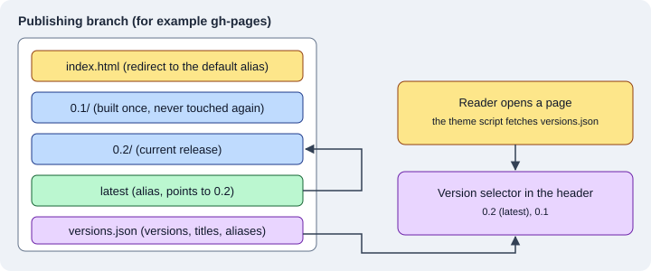

Versioning and i18n
|
This content was generated with the assistance of AI and should be verified against the official documentation before being relied on in production. |
This page was written against Zensical 0.0.72 (published on PyPI on 2026-10-23, still marked alpha) and checked on
2026-10-26. Zensical has no native feature for publishing several versions of a site and no feature for translating
the content of a site. What it does have is a transitional fork of the mike tool for versions, an interface that is
translated into more than 60 languages, and a language selector that links to sites built separately. This page
explains each of them with the documentation of Pocket Units, the small units-conversion library with a C# and a
Python implementation, as running example.
The state of versioning and i18n
| Need | What Zensical 0.0.72 provides | What is not available |
|---|---|---|
Several versions of the docs |
The mike plugin, backed by a compatible fork of |
Native versioning. It is on the roadmap as Git-based and folder-based versions with selective publishing and focused rebuilds. |
Interface language |
|
One site cannot mix several interface languages: HTML allows one language per document, so the project has a single canonical language. |
Content in several languages |
A language selector ( |
Content translation: language folders or suffixes, translation tracking and per-language publishing are roadmap items only. |
The sections below follow the table. The roadmap items are described in the last section, and the version and upgrade policy of the project itself is in Roadmap and upgrade policy.
Versioning with the mike fork
What mike does
mike is a Python utility, written for MkDocs, that deploys several versions of a site to a Git branch (normally
gh-pages). Its idea is that a version, once built, is never built again: older versions stay as generated files on
the branch, so they cannot be broken by changes in the generator. Every mike deploy creates a new Git commit on the
branch that replaces the folder of that version and leaves the other versions untouched. The layout it recommends is a
folder per <major>.<minor> version plus optional aliases such as latest or dev. A versions.json file lists the
versions, their titles and their aliases, and the theme reads it to draw the version selector.

The figure shows the result on the publishing branch: one folder per version, an alias that points to one of them, a root page that redirects to the default alias, and the list of versions that the selector reads in the browser.
Why a fork
The upstream mike calls MkDocs. Zensical documents a fork of mike, hosted in the repository of the Material for
MkDocs author, that keeps the commands and the configuration of mike working for Zensical sites. The documentation is
explicit about its purpose: the integration is transitional, the fork is maintained until Zensical has native
versioning, and native versioning is meant to support more deployment targets and more versioning strategies. The
fork is based on mike 2.2.0 and receives compatibility fixes but no new features, so it is a bridge for projects that
already publish versions with mike and not a base to build new tooling on.
Installing the fork
The fork is not on PyPI under the name mike: the documentation installs it directly from GitHub, which means that
git must be available. The command provides the same mike command as the original package.
pip install git+https://github.com/squidfunk/mike.gitThis installation was not executed here: it downloads and installs code from a Git repository outside PyPI, which was
not approved in the environment used to check this page. Because of that, the mike deploy, mike set-default and
mike list commands below are described from the documentation of Zensical, of Material for MkDocs and of upstream
mike, and were not run against Zensical.
Configuring the version selector
The Zensical page asks you to keep the existing mkdocs.yml and to enable the selector as in Material for MkDocs, with
the extra.version key. The settings of the default version, the visible aliases and the outdated-version warning keep
working. The Material for MkDocs guide lists them:
| Key | Meaning |
|---|---|
|
Set to |
|
The alias (or a list of aliases) treated as the current version. The default is |
|
When |
site_name: Pocket Units
site_url: https://example.org/pocket-units/
extra:
version:
provider: mike
default: stable
alias: truesite_url must be set explicitly because every version is deployed as a sub-folder of it (for example
https://example.org/pocket-units/0.2/), and the selector uses it to keep the reader on the same page when the
version changes. That switch happens in JavaScript, so it cannot know ahead of time whether the same page exists in the
other version.
The same values can be written in zensical.toml as a table. Both forms were built with Zensical 0.0.72 and in both
cases the build finished with "No issues found" and the page configuration embedded in the generated HTML contained
the same data:
[project]
site_name = "Pocket Units"
site_url = "https://example.org/pocket-units/"
[project.extra.version]
provider = "mike"
default = "stable"
alias = true"version":{"alias":true,"default":"stable","provider":"mike"}The selector itself is not part of the generated HTML: it is built in the browser from versions.json, so a plain
zensical build shows no selector. The documentation of Zensical describes only the mkdocs.yml form for the fork,
so which configuration file the mike command itself reads in a project that has only zensical.toml is not
specified there; for a first migration keep the mkdocs.yml next to zensical.toml as the page recommends.
The mike plugin settings
The list of supported MkDocs plugins includes mike since Zensical 0.0.30, and documents these settings. They are the
settings of the upstream plugin, except that css_dir and javascript_dir are ignored because Zensical supplies the
selector assets itself.
| Setting | Default | Meaning |
|---|---|---|
|
|
Turns the integration on or off. |
|
|
Shows the version selector. |
|
|
How aliases are created: |
|
|
Folder inside the branch where the versions are placed, useful when other pages live at the root. |
|
|
The version used in canonical URLs, so that search engines prefer one of them (for example |
|
|
A custom template for the redirect pages. |
Source: Zensical docs: MkDocs plugins
Everyday commands
The commands are those of upstream mike. A typical release publishes a version together with the alias that readers use, moves the alias when it already points elsewhere, and pushes the branch:
mike deploy --push --update-aliases 0.2 latest
mike set-default --push latest
mike list-
mike deploy <version> [alias...]builds one version and commits it.--update-aliases(-u) moves an alias that already points to another version,--push(-p) pushes the branch and--alias-typechooses betweensymlink,redirectandcopy. -
mike set-default <alias>writes the root page that redirects the readers of the bare site address to that version. -
mike listprints the deployed versions andmike serveserves the branch locally, for testing only. -
mike delete,mike alias,mike retitleandmike propsremove, re-alias, rename and annotate versions.
The documentation of Zensical advises to keep the current MkDocs deployment in place while testing the same setup with Zensical, and to switch the build environment and the deployment workflow only after the generated versions, aliases and redirects have been checked. The migration path as a whole is in Migrating from Material for MkDocs. For the publishing workflows that do not use versions, see Validation and publishing.
Versions without mike
Because the roadmap lists folder-based versions, a manual alternative is possible today: build each release into its
own folder with site_dir and site_url, and publish the folders together. Zensical does not provide a selector for
that arrangement, so the links between versions have to be written by hand. The comparable features of the other tools are described in
Antora versioning and
Docusaurus versioning, where versions are part of the tool.
Interface language
theme.language
The interface of the theme (search placeholder, navigation labels, "back to top", date labels and so on) is localised. The documentation says that, with the help of contributors, the templates exist in more than 60 languages, and the language is chosen with one key:
[project]
site_name = "Pocket Units"
[project.theme]
language = "de"Source: Zensical docs: Language
In mkdocs.yml the same setting is theme.language: de. The build with Zensical 0.0.72 set the lang attribute to de on the html
element, translated the visible texts (the search label became "Suche") and did not change the content of the Markdown
pages, which stay in whatever language they were written in.
<html lang="de" class="no-js">A project has exactly one language. The documentation explains that HTML allows a single language per document, which
is why Zensical supports a canonical language for the whole project and not a language per page. The default is en.
The language codes of the supported list use the ISO 639-1 form (de, fr, ja) and, in a few cases, a region or
script (pt-BR, zh-TW, zh-Hant, ku-IQ). Most entries are marked complete. At the time of the check, Burmese
(my), Georgian (ka), Sinhalese (si), Tagalog (tl) and Kurdish Soranî (ku-IQ) had missing translations (between
3 and 27 strings).
An unknown code stops the build with a template error instead of falling back silently. With the language set to xx the
build failed with:
RuntimeError: could not render include: error in "partials/language.html" (in base.html:4): template not found: tried to include non-existing template "partials/languages/xx.html" (in partials/language.html:5)The search language is derived from theme.language as well, and the search interface itself is currently available
in English only. Both points are described in Search.
theme.direction
The reading direction is deduced from the language: Arabic, for example, gives right-to-left and English
left-to-right. It can be forced with theme.direction, whose values are ltr and rtl:
[project]
site_name = "Pocket Units"
[project.theme]
language = "en"
direction = "rtl"Source: Zensical docs: Language
The result was checked on the body element of the generated page. A build with the language ar and no direction
produced a body with dir set to rtl; a build with language en and direction rtl kept lang at en and also
produced dir set to rtl; a build with English or German and no direction produced dir set to ltr.
Overriding translations
To change some of the texts of a language, the documentation uses a template override. Create a partial in the
partials/languages folder of the overrides directory (set with custom_dir, see
Theming and customization) that imports the
translations of the language and of English, defines the changed keys, and selects the partial with
the language custom. English is always the fallback, because it is the default language of the theme.
<!-- Import translations for language and fallback -->
{% import "partials/languages/de.html" as language %}
{% import "partials/languages/en.html" as fallback %}
<!-- Define custom translations -->
{% macro override(key) %}{{ {
"source.file.date.created": "Erstellt am",
"source.file.date.updated": "Aktualisiert am"
}[key] }}{% endmacro %}
<!-- Re-export translations -->
{% macro t(key) %}{{
override(key) or language.t(key) or fallback.t(key)
}}{% endmacro %}[project]
site_name = "Pocket Units"
[project.theme]
language = "custom"
custom_dir = "overrides"Source: Zensical docs: Language
This pair of files built with Zensical 0.0.72 without errors; the generated page had lang set to de and German interface
texts, taken from the imported language. The overridden keys concern the dates of the page source and are only used
when that feature is enabled.
Several languages for the content
A selector, not a translation system
Zensical translates the interface and not the content. For a documentation site in several languages the documented
mechanism is a language selector in the header, filled from extra.alternate. Each entry points to a site that was
built for that language, possibly on another domain or built by another tool.
[project]
site_name = "Pocket Units"
site_url = "https://example.org/pocket-units/"
[project.theme]
language = "de"
[project.extra]
alternate = [
{ name = "English", link = "/en/", lang = "en" },
{ name = "Deutsch", link = "/de/", lang = "de" },
]Source: Zensical docs: Language
Every entry needs three properties. name is the label shown in the selector and must not be empty. link must be
an absolute link: with a domain it is used as written, without one the domain of site_url is prepended. lang is an
ISO 639-1 code used for the hreflang attribute, which helps search engines to find the other languages. The build
with Zensical 0.0.72 wrote these elements for the example above:
<link rel="alternate" href="/en/" hreflang="en">
<link rel="alternate" href="/de/" hreflang="de">and a md-select list in the header with the two names, "English" and "Deutsch", as links with hreflang. In that
output the links were left as the relative-looking paths /en/ and /de/, so the generated markup does not show the
domain of site_url being prepended; check the final URLs in a deployed site.
One project per language
Because there is one language per project, the practical layout is two (or more) Zensical projects, one per language,
each with its own zensical.toml, docs folder and theme.language, built into the sub-folders that the link
values point to. The selector connects them, and hreflang tells search engines that the sites are translations of
each other. Nothing in Zensical keeps the pages in sync: moving or adding a page in one language does not warn when the
other language lacks it.
Docusaurus, in contrast, has locales, translation files and per-locale builds in the tool itself; see Docusaurus internationalization.
Content internationalization on the roadmap
The roadmap of Zensical is directional and gives no delivery dates. Under "Internationalization" it lists the work for projects that need flexibility in how they organise, translate and publish content:
-
language organisation with suffix-based or folder-based structures,
-
translation tracking, to follow source changes and translation status,
-
translation preparation, to prepare changed content for translation,
-
content localisation of prose, code samples and examples,
-
interface localisation of navigation and interface text,
-
publishing languages together or independently.
Under "Versioning" the same roadmap lists Git-based versions, folder-based versions, selective publishing and focused rebuilds that avoid rebuilding unchanged content. None of these items is available in 0.0.72, so the plugin list of the compatibility documentation, the mike fork and the language selector are what a project can use today. Until the native features exist, the documentation of Pocket Units in several languages and versions is a set of separate builds tied together by links.
Pitfalls and version notes
-
Alpha software: Zensical 0.0.72 is in the 0.0.x alpha series, and the 0.1.0 release announced for 2026-11-05 starts a dependable line. The settings on this page are those of 0.0.72.
-
The mike fork is installed from GitHub, needs
git, and receives compatibility fixes only. Plan to replace it when native versioning arrives. -
The
mikeplugin settingscss_dirandjavascript_dirare ignored by Zensical. -
A wrong
theme.languagecode fails the build with a missing template error; the list of languages marks the incomplete ones. -
theme.directionoverrides the direction deduced from the language, but the content you write is not changed: anrtlsetting on an English site only mirrors the layout. -
site_urlmatters for versioning, for the language selector links and for canonical URLs. Set it on every project. -
The search interface stays in English whatever
theme.languageis.